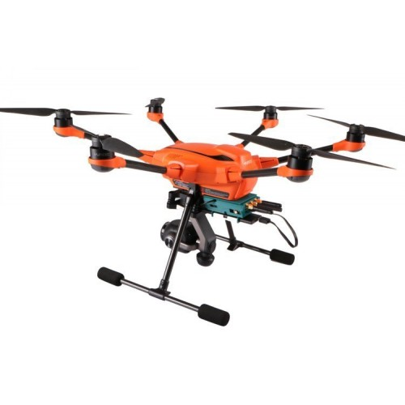

Yuneec H520

Yuneec H520 to profesjonalny dron zaprojektowany z myślą o zastosowaniach komercyjnych. Poznaj jego wyjątkowe cechy:
- Zawodowa jakość obrazu: H520 jest wyposażony w kamerę, która pozwala na nagrywanie wideo i robienie zdjęć w doskonałej jakości.
- Długi czas lotu: Dron może latać przez długi czas, co umożliwia rozległe misje i zastosowania.
- Wielofunkcyjność: Yuneec H520 to dron, który można dostosować do różnych celów, takich jak fotografia lotnicza, inspekcje i inne.